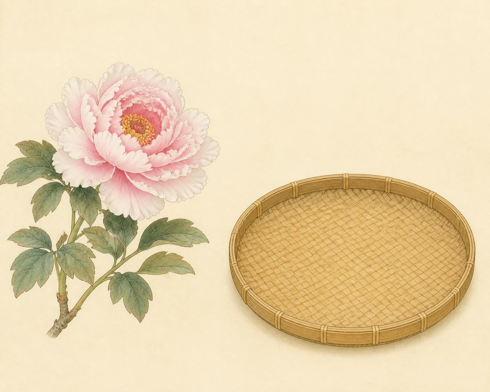
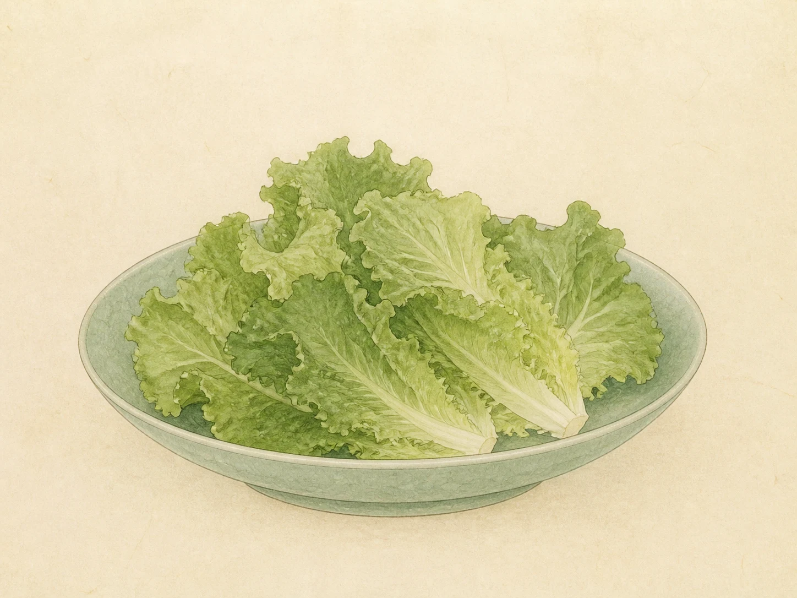
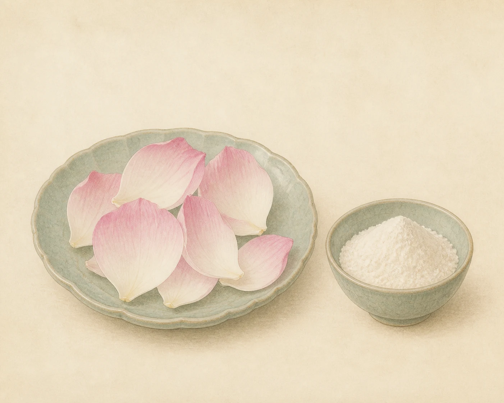
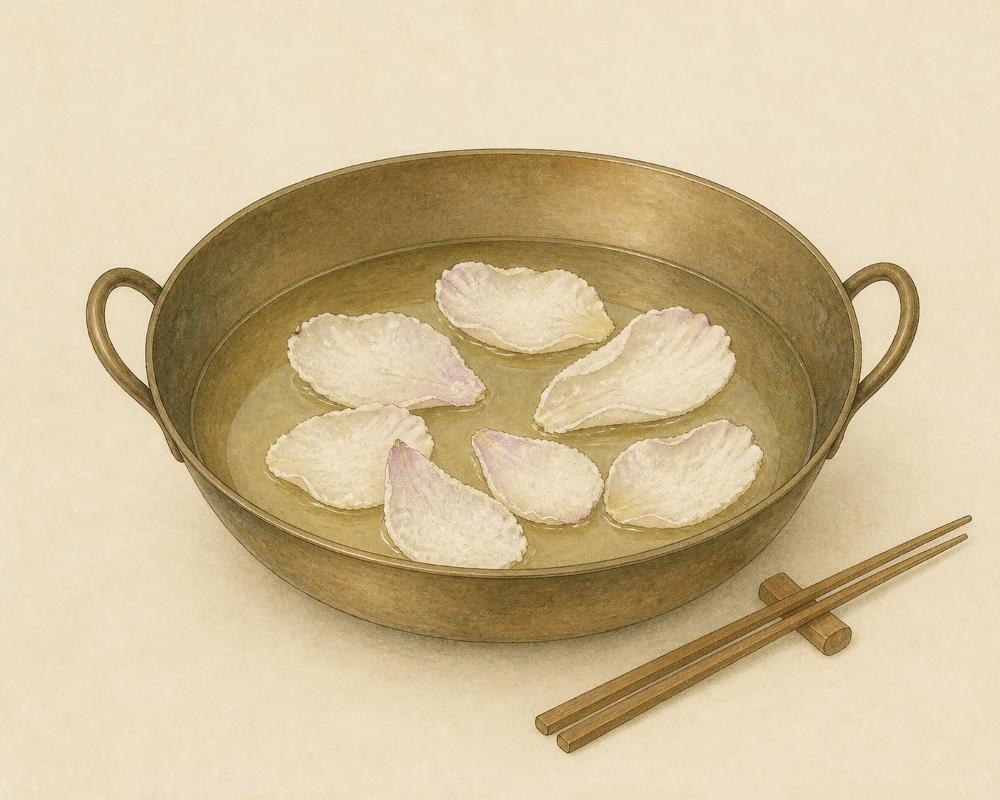
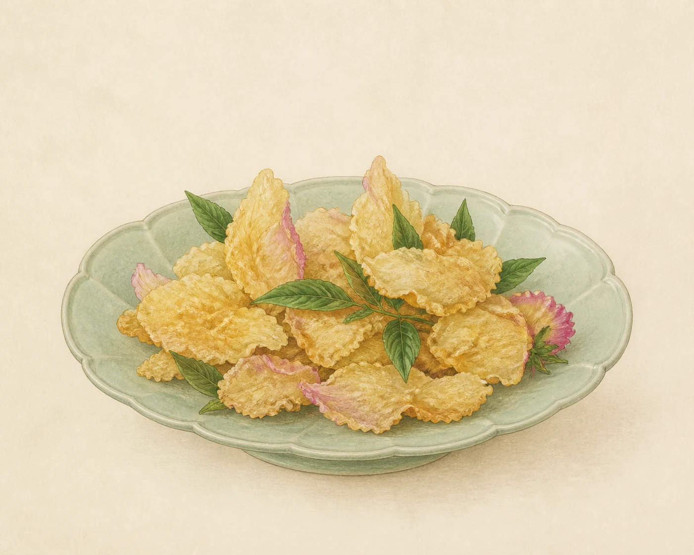

第二章 · 看菜谱
从原文出发
林洪写得极简：牡丹花瓣可以和生菜同食，也可以薄面裹花，炸之以酥。
原文依据“完璧喜清俭，不嗜荤。每令后苑进生菜，必采牡丹瓣和之。”
先读原文，再点击“循原文做菜”，进入第一步。
这一道菜的妙处牡丹不是只供观赏的花。花瓣与生菜相和，清芬、脆嫩与春日的颜色一起入口，正是“山家清供”的生活趣味。
完璧喜清俭，不嗜荤。每令后苑进生菜，必采牡丹瓣和之。或用微面襞，炸之以酥。





林洪写得极简：牡丹花瓣可以和生菜同食，也可以薄面裹花，炸之以酥。